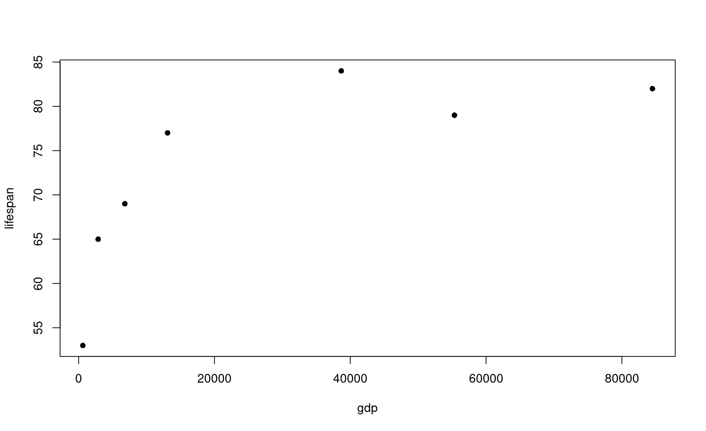

Module 16 Base plots
Learning goals
- Make basic plots in
R - Basic adjustments to plot formatting
To learn how to plot, let’s first create a dataset to work with:
country <- c("USA","Tanzania","Japan","Ctr. Africa Rep.","China","Norway","India")
lifespan <- c(79,65,84,53,77,82,69)
gdp <- c(55335,2875,38674,623,13102,84500,6807)These data come from this publicly available database that compares health and economic indices across countries in 2011.
The lifespan column presents the average life expectancy for each country.
The gdp column presents the average GDP per capita within that country, which is a common index for the income and wealth of average citizens.
Let’s see if there is a relationship between life expectancy and income.
Create a basic plot
The simplest way to make a basic plot in R is to use its built-in plot() function:
This syntax is saying this: plot column lifespan as a function of gdp. The symbol ~ denotes “as a function of”. This frames lifespan as a dependent variable (y axis) that is affected by the independent variable (x axis), which in this case is gdp.
Note that R uses the variable names you provided as the x- and y-axes. You can adjust these labels however you wish (see formatting section below).
You can also produce this exact same plot using the following syntax:
Choose whichever one is most intuitive to you.
Most common types of plots
The plot above is a scatter plot, and is one of the most common types of plots in data science.
You can turn this into a line plot by adding a parameter to the plot() function:

What a mess! Rather than connecting these values in the order you might expect, R connects them in the order that they are listed in their source vectors. This is why line plots tend to be more useful in scenarios such as time series, which are inherently ordered.
Another common plot is the bar plot, which uses a different R function:
In this command, the parameter height determines the height of the bars, and names.arg provides the labels to place beneath each bar.
There are many more plot types out there, but let’s stop here for now.
Basic plot formatting
You can adjust the default formatting of plots by adding other inputs to your plot() command. To understand all the parameters you can adjust, bring up the help page for this function:
If multiple help page options are returned, select the Generiz X-Y Plotting page from the base package. This is the plot function that comes built-in to R.
Here we demonstrate just a few of the most common formatting adjustments you are likely to use:
Set plot range using xlim (for the x axis) and ylim (for the y axis):
In this command, you are defining axis limits using a 2-element vector (i.e., c(min,max)).
Note that it can be easier to read your code if you put each input on a new line, like this:
Make sure each input line within the function ends with a comma, otherwise you R will get confused and throw an error.
Set dot type using the input pch:

Set dot color using the input col (the default is col="black")

Here is a great resource for color names in R.
Set dot size using the input cex (the default is cex=1):

Set axis labels using the inputs xlab and ylab:

Set axis number size using the input cex.axis (the default is cex.axis=1):

Set axis label size using the input cex.label (the default is cex.lab=1):

Set plot margins using the function par(mar=c()) before you call plot():
In this command, the four numbers in the vector used to define mar correspond to the margin for the bottom, left, top, and right sides of the plot, respectively.
Create a multi-pane plot using the function par(mfrow=c()) before you call plot():
In this command, the two numbers in the vector used to define mfrow correspond to the number of rows and columns, respectively, on the entire plot. In this case, you have 1 row of plots with two columns.
Note that you will need to reset the number of panes when you are done with your multi-pane plot!
Plot dots and lines at once using the input type:

Note the two slightly different formats here.
Use a logarithmic scale for one or of your axes using the input log

Plotting with data frames
So far in this tutorial we have been using vectors to produce plots. This is nice for learning, but does not represent the real world very well. You will almost always be producing plots using dataframes.
Let’s turn these vectors into a dataframe:
df <- data.frame(country,lifespan,gdp)
df
country lifespan gdp
1 USA 79 55335
2 Tanzania 65 2875
3 Japan 84 38674
4 Ctr. Africa Rep. 53 623
5 China 77 13102
6 Norway 82 84500
7 India 69 6807To plot data within a dataframe, your plot() syntax changes slightly:

This syntax is saying this: using the dataframe named df as a source, plot column lifespan as a function of column gdp. The symbol ~ denotes “as a function of”. This frames lifespan as a dependent variable (y axis) that is affected by the independent variable (x axis), which in this case is gdp.
Another way to write this command is as follows:
In this command, as you learned in the dataframes module, the $ symbol is saying, “give me the column in df named lifespan”. It is a handy way of referring to a column within a dataframe by name.
Exercises
The economics of health
1. Using the data above, produce a bar plot that shows the GDP for each country.
2. Use the df dataframe you built above to produce a bar plot that shows life expectancy for each country.
3. Use the df dataframe to produce a jumbled line plot of life expectancy as a function of GDP. Reference the plot() documentation to figure out how to change the thickness of the line.
Shoe ~ height correlation
4. Create a vector of the names of 5 people who are sitting near you. Call it people.
5. Create a vector of those same 5 people’s shoe sizes (in the same order!). Call it shoe_size.
6. Create another vector of those same 5 people’s height. Call it height.
7. Create another vector of those same 5 people’s sex. Call it sex.
8. Make a scatterplot of height and shoe size. Is there a correlation?
9. Look up help for boxplot. Make a boxplot.
10. Make a dataframe named df. It should contain columns of all the vectors created so far.
11. Make a side by side boxplot with shoe sizes of males vs females.
12. Try to find documentation for making a “histogram” (hint: use text autocomplete).
13. Make a histogram of people’s height.
Make your plot beautiful
14. Produce a beautifully formatted plot that incorporates all of the customization inputs explained above into a multi-paned plot. Use any dataset from this module that you wish.